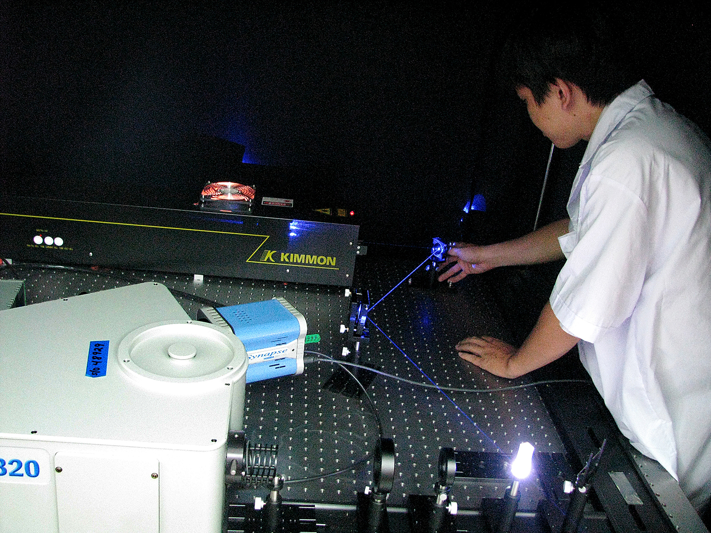
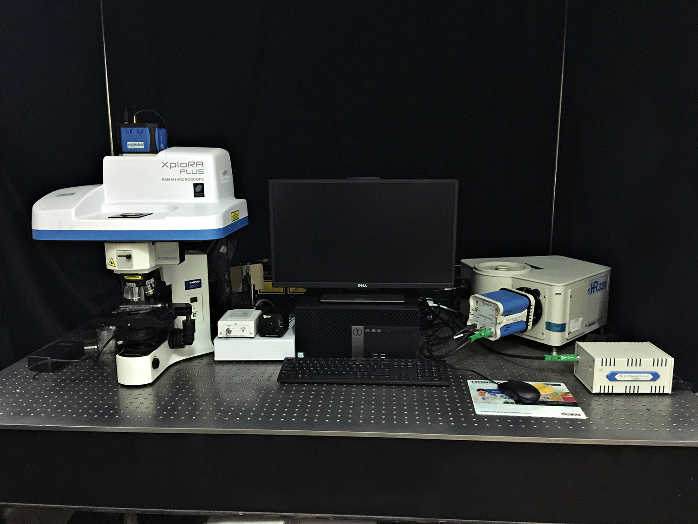
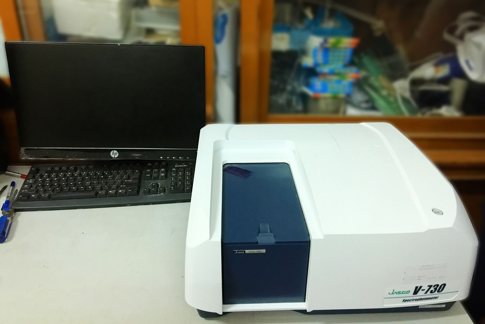
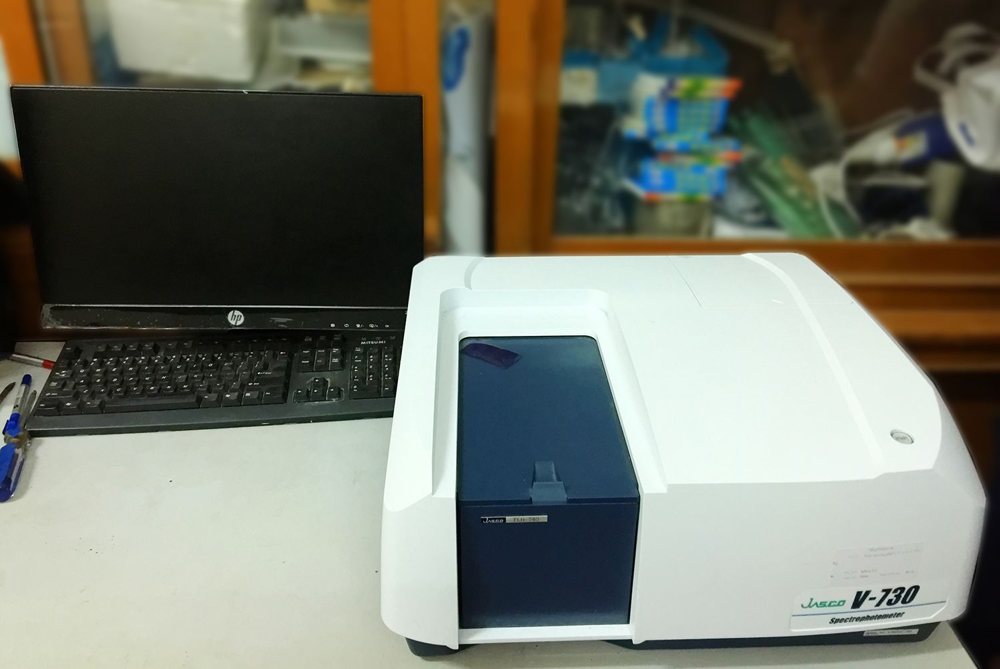
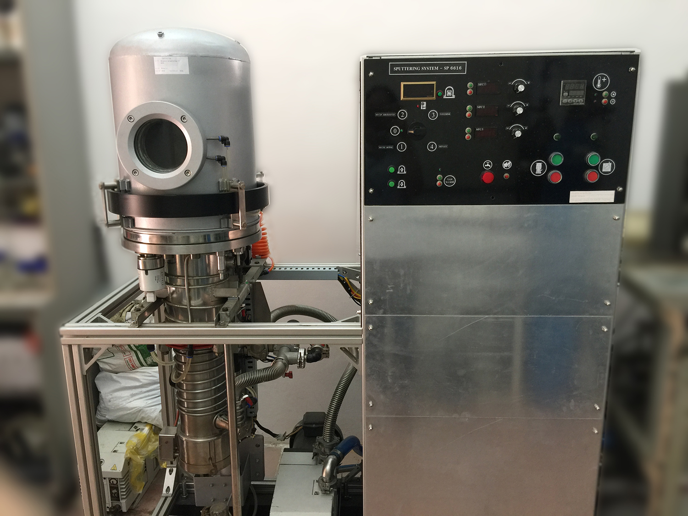

Phòng thí nghiệm
1 số thông tin về phòng thí nghiệm
Bộ môn Vật lý Ứng dụng có hai Phòng thí nghiệm phục vụ giảng dạy-nghiên cứu cho sinh viên và học viên sau đại học: Phòng thí nghiệm Quang học-Quang tử và Phòng thí nghiệm Vật lý Chân không. Đặc biệt, từ năm 2016-2020, Phòng thí nghiệm Quang học-Quang tử được đầu tư trọng điểm với tổng kinh phí hơn 7 tỷ đồng nhằm nâng cao chất lượng các nghiên cứu khoa học tại bộ môn.
1. Giới thiệu chung
Phòng thí nghiệm Quang học - Quang tử được phát triển từ phòng thí nghiệm Quang học - Quang phổ từ năm 2016. Phòng thí nghiệm Quang học - Quang tử là phòng A04 và A05, dãy nhà A, trường Đại học Khoa học Tự nhiên, ĐHQG TP. HCM, cơ sở Nguyễn Văn Cừ. Diện tích của phòng thí nghiệm là 650 m2 bao gồm: khu vực lắp đặt thiết bị 350 m2 và khu vực thí nghiệm 300 m2. Hiện nay trưởng phòng thí nghiệm là PGS. TS. Vũ Thị Hạnh Thu.
2. Chức năng và nhiệm vụ
Quang học - quang tử là một ngành khoa học có quan hệ mật thiết với ngành chế tạo vật liệu mới, là một trong năm lĩnh vực ưu tiên phát triển trong giai đoạn hiện nay và trong thời gian tới để phục vụ cho mục tiêu công nghiệp hóa và hiện đại hóa. Quang tử đã vượt ra ngoài lĩnh vực khoa học cơ bản và tiến tới một ngành công nghệ hiện đại nên người ta thường gọi nó là ngành công nghệ quang tử. Các phát minh của công nghệ quang tử như: LED, photodiode, laser, solar cell, cáp quang và tinh thể quang tử (photonic crystal), v.v... Các thiết bị quang tử ngày càng đóng vai trò thiết yếu trong cuộc sống.
Phòng thí nghiệm (PTN) Quang học - Quang tử thuộc bộ môn Vật lý Ứng dụng - Khoa Vật lý-VLKT sở hữu nguồn nhân lực nghiên cứu chất lượng cao tập trung vào chuyên ngành quang học, quang phổ, quang tử và luôn đi đầu trong công tác nghiên cứu và đào tạo đại học, sau đại học. Bộ môn liên tục nhận được danh hiệu tập thể lao động xuất sắc cấp ĐHQG, cấp trường, bằng khen của Thủ tướng chính phủ, bằng khen của Bộ Giáo dục và Đào tạo, huân chương Lao động hạng 3, v.v... Đặc biệt, từ năm 2010 cho đến nay, với các trang thiết bị sẵn có và được đầu tư bước đầu, bộ môn đã đào tạo được hơn 120 thạc sĩ, 7 tiến sĩ chuyên ngành Quang học (chuyên ngành Quang học được đánh giá là một trong những chuyên ngành đào tạo sau đại học mạnh nhất của trường).
Chức năng và nhiệm vụ chính của PTN Quang học - Quang tử nói riêng và bộ môn Vật lý Ứng dụng nói chung là trung tâm nghiên cứu, đào tạo đại học, sau đại học, phân tích - đánh giá về lĩnh vực quang tử, quang phổ, vật liệu nano và quang phi tuyến.


3. Các hướng nghiên cứu tại phòng thí nghiệm
- Nghiên cứu công nghệ chế tạo vật liệu quang tử điện cực trong suốt dẫn điện, các loại màng bán dẫn loại n, loại p, các loại màng hấp thụ cao ứng dụng cho pin Mặt Trời hiệu suất cao: CZTS, Cu2O,…
- Nghiên cứu công nghệ chế tạo các chấm lượng tử bán dẫn phát quang mạnh (CdS, CdSe) có cấu trúc khác nhau (lõi trần, lõi/vỏ, lõi/vỏ/vật liệu chức năng…), các vật liệu tinh thể quang tử 1D; 2D; 3D có thể thay đổi vùng cấm quang học, các vật liệu cấu trúc nano có các tính chất đặc biệt bằng phương pháp hóa.
- Nghiên cứu chế tạo các loại vật liệu dùng làm môi trường hoạt tính trong các thiết bị Laser nhằm tiến tới việc chế tạo loại laser trên cơ sở các vật liệu này.
- Nghiên cứu chế tạo các loại vật liệu có cấu trúc grapheme: MoS2, MoSe2,… nhằm ứng dụng trong các loại pin MT, quang xúc tác,…
- Nghiên cứu và phát triển (R&D) công nghệ chế tạo các linh kiện và thiết bị quang tử nhằm ứng dụng trong thông tin quang học và cảm biến quang.
- Nghiên cứu ứng dụng các vật liệu quang tử kích thước nano-mét trong đánh dấu huỳnh quang, đánh dấu sinh học, tự làm sạch và sát khuẩn, linh kiện phát quang và chuyển đổi quang-điện, pin mặt trời hiệu suất cao.
- Nghiên cứu chế tạo các loại cảm biến SERS (Tăng cường tín hiệu Raman hiệu ứng cộng hưởng plasmon bề mặt) để phát hiện các vết hóa học thuốc trừ sâu trong trái cây, rau củ.
- Nghiên cứu chế tạo vật liệu quang phi tuyến (NLO) như tinh thể KDP (KH2PO4), màng polymer chất màu hữu cơ,… nhằm ứng dụng trong các hệ quang học laser như là: bộ nhân tần laser, bộ biến điệu điện-quang, màng giới hạn quang, v.v… Nghiên cứu xác định hệ số quang phi tuyến bậc hai, các tham số quang số quang phi tuyến bậc ba, sự hấp thụ hai photon trong các hiệu ứng quang động học của các vật liệu tinh thể và chất màu hữu cơ.


4. Một số thiết bị tại phòng thí nghiệm
- Hệ đo phổ Quang Phát quang (PL)
- Máy đo phổ Raman
- Máy đo phổ UV-VIS
 

- Máy đo độ phản xạ

- Hệ tạo màng bằng phương pháp phún xạ

- Hệ tạo màng bằng phương pháp bốc bay

- Hệ tạo đo cảm biến khí của màng mỏng

- Lò nung mẫu 1500 độ C

- Lò nung mẫu 1500 độ dạng ống

- Lò nung đế (bia) 300 - 3000 độ C

- Hệ nuôi tinh thể dạng kỹ thuật SR

5. Liên hệ
Các nhu cầu về việc gửi mẫu đo đạc, phân tích, đánh giá, thực hành thí nghiệm… quý khách có thể liên hệ:
Trưởng phòng thí nghiệm Quang học-Quang tử: PGS. TS. Vũ Thị Hạnh Thu
Email: vththu@hcmus.edu.vn